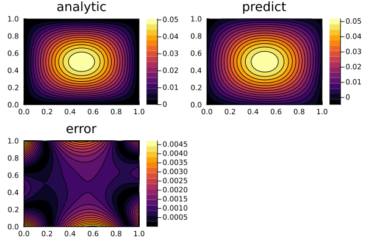
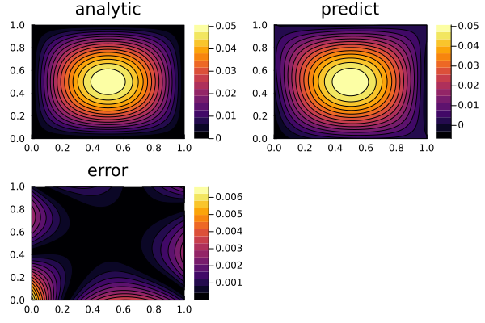

Specifying and Solving PDESystems with Physics-Informed Neural Networks (PINNs)
In this example, we will solve a Poisson equation:
\[∂^2_x u(x, y) + ∂^2_y u(x, y) = - \sin(\pi x) \sin(\pi y) \, ,\]
with the boundary conditions:
\[\begin{align*} u(0, y) &= 0 \, ,\\ u(1, y) &= 0 \, ,\\ u(x, 0) &= 0 \, ,\\ u(x, 1) &= 0 \, , \end{align*}\]
on the space domain:
\[x \in [0, 1] \, , \ y \in [0, 1] \, ,\]
Using physics-informed neural networks.
Copy-Pasteable Code
using NeuralPDE, Lux, Optimization, OptimizationOptimJL, LineSearches, Plots
using DomainSets: Interval
using IntervalSets: leftendpoint, rightendpoint
@parameters x y
@variables u(..)
Dxx = Differential(x)^2
Dyy = Differential(y)^2
# 2D PDE
eq = Dxx(u(x, y)) + Dyy(u(x, y)) ~ -sin(pi * x) * sin(pi * y)
# Boundary conditions
bcs = [
u(0, y) ~ 0.0, u(1, y) ~ 0.0,
u(x, 0) ~ 0.0, u(x, 1) ~ 0.0
]
# Space domains
domains = [x ∈ Interval(0.0, 1.0), y ∈ Interval(0.0, 1.0)]
# Neural network
dim = 2 # number of dimensions
chain = Chain(Dense(dim, 16, σ), Dense(16, 16, σ), Dense(16, 1))
# Discretization
discretization = PhysicsInformedNN(
chain, QuadratureTraining(; batch = 200, abstol = 1e-6, reltol = 1e-6))
@named pde_system = PDESystem(eq, bcs, domains, [x, y], [u(x, y)])
prob = discretize(pde_system, discretization)
#Callback function
callback = function (p, l)
println("Current loss is: $l")
return false
end
# Optimizer
opt = LBFGS(linesearch = BackTracking())
res = solve(prob, opt, maxiters = 1000)
phi = discretization.phi
dx = 0.05
xs, ys = [leftendpoint(d.domain):(dx / 10):rightendpoint(d.domain) for d in domains]
analytic_sol_func(x, y) = (sin(pi * x) * sin(pi * y)) / (2pi^2)
u_predict = reshape([first(phi([x, y], res.u)) for x in xs for y in ys],
(length(xs), length(ys)))
u_real = reshape([analytic_sol_func(x, y) for x in xs for y in ys],
(length(xs), length(ys)))
diff_u = abs.(u_predict .- u_real)
p1 = plot(xs, ys, u_real, linetype = :contourf, title = "analytic");
p2 = plot(xs, ys, u_predict, linetype = :contourf, title = "predict");
p3 = plot(xs, ys, diff_u, linetype = :contourf, title = "error");
plot(p1, p2, p3)
Detailed Description
The ModelingToolkit PDE interface for this example looks like this:
using NeuralPDE, Lux, ModelingToolkit, Optimization, OptimizationOptimJL
using DomainSets: Interval
using IntervalSets: leftendpoint, rightendpoint
using Plots
@parameters x y
@variables u(..)
Dxx = Differential(x)^2
Dyy = Differential(y)^2
# 2D PDE
eq = Dxx(u(x, y)) + Dyy(u(x, y)) ~ -sin(pi * x) * sin(pi * y)
# Boundary conditions
bcs = [u(0, y) ~ 0.0, u(1, y) ~ 0.0,
u(x, 0) ~ 0.0, u(x, 1) ~ 0.0]
# Space domains
domains = [x ∈ Interval(0.0, 1.0),
y ∈ Interval(0.0, 1.0)]2-element Vector{Symbolics.VarDomainPairing}:
Symbolics.VarDomainPairing(x, 0.0 .. 1.0)
Symbolics.VarDomainPairing(y, 0.0 .. 1.0)Here, we define the neural network, where the input of NN equals the number of dimensions and output equals the number of equations in the system.
# Neural network
dim = 2 # number of dimensions
chain = Chain(Dense(dim, 16, σ), Dense(16, 16, σ), Dense(16, 1))Chain(
layer_1 = Dense(2 => 16, σ), # 48 parameters
layer_2 = Dense(16 => 16, σ), # 272 parameters
layer_3 = Dense(16 => 1), # 17 parameters
) # Total: 337 parameters,
# plus 0 states.Here, we build PhysicsInformedNN algorithm where dx is the step of discretization where strategy stores information for choosing a training strategy.
discretization = PhysicsInformedNN(
chain, QuadratureTraining(; batch = 200, abstol = 1e-6, reltol = 1e-6))PhysicsInformedNN{Lux.Chain{@NamedTuple{layer_1::Lux.Dense{typeof(NNlib.σ), Int64, Int64, Nothing, Nothing, Static.True}, layer_2::Lux.Dense{typeof(NNlib.σ), Int64, Int64, Nothing, Nothing, Static.True}, layer_3::Lux.Dense{typeof(identity), Int64, Int64, Nothing, Nothing, Static.True}}, Nothing}, QuadratureTraining{Float64, Integrals.CubatureJLh}, Nothing, Nothing, NeuralPDE.Phi{LuxCore.StatefulLuxLayerImpl.StatefulLuxLayer{Val{true}, Lux.Chain{@NamedTuple{layer_1::Lux.Dense{typeof(NNlib.σ), Int64, Int64, Nothing, Nothing, Static.True}, layer_2::Lux.Dense{typeof(NNlib.σ), Int64, Int64, Nothing, Nothing, Static.True}, layer_3::Lux.Dense{typeof(identity), Int64, Int64, Nothing, Nothing, Static.True}}, Nothing}, Nothing, @NamedTuple{layer_1::@NamedTuple{}, layer_2::@NamedTuple{}, layer_3::@NamedTuple{}}}}, typeof(NeuralPDE.numeric_derivative), Bool, Nothing, Nothing, Nothing, Base.RefValue{Int64}, Base.Pairs{Symbol, Union{}, Nothing, @NamedTuple{}}}(Lux.Chain{@NamedTuple{layer_1::Lux.Dense{typeof(NNlib.σ), Int64, Int64, Nothing, Nothing, Static.True}, layer_2::Lux.Dense{typeof(NNlib.σ), Int64, Int64, Nothing, Nothing, Static.True}, layer_3::Lux.Dense{typeof(identity), Int64, Int64, Nothing, Nothing, Static.True}}, Nothing}((layer_1 = Dense(2 => 16, σ), layer_2 = Dense(16 => 16, σ), layer_3 = Dense(16 => 1)), nothing), QuadratureTraining{Float64, Integrals.CubatureJLh}(Integrals.CubatureJLh(0), 1.0e-6, 1.0e-6, 1000, 200), nothing, nothing, NeuralPDE.Phi{LuxCore.StatefulLuxLayerImpl.StatefulLuxLayer{Val{true}, Lux.Chain{@NamedTuple{layer_1::Lux.Dense{typeof(NNlib.σ), Int64, Int64, Nothing, Nothing, Static.True}, layer_2::Lux.Dense{typeof(NNlib.σ), Int64, Int64, Nothing, Nothing, Static.True}, layer_3::Lux.Dense{typeof(identity), Int64, Int64, Nothing, Nothing, Static.True}}, Nothing}, Nothing, @NamedTuple{layer_1::@NamedTuple{}, layer_2::@NamedTuple{}, layer_3::@NamedTuple{}}}}(LuxCore.StatefulLuxLayerImpl.StatefulLuxLayer{Val{true}, Lux.Chain{@NamedTuple{layer_1::Lux.Dense{typeof(NNlib.σ), Int64, Int64, Nothing, Nothing, Static.True}, layer_2::Lux.Dense{typeof(NNlib.σ), Int64, Int64, Nothing, Nothing, Static.True}, layer_3::Lux.Dense{typeof(identity), Int64, Int64, Nothing, Nothing, Static.True}}, Nothing}, Nothing, @NamedTuple{layer_1::@NamedTuple{}, layer_2::@NamedTuple{}, layer_3::@NamedTuple{}}}(Lux.Chain{@NamedTuple{layer_1::Lux.Dense{typeof(NNlib.σ), Int64, Int64, Nothing, Nothing, Static.True}, layer_2::Lux.Dense{typeof(NNlib.σ), Int64, Int64, Nothing, Nothing, Static.True}, layer_3::Lux.Dense{typeof(identity), Int64, Int64, Nothing, Nothing, Static.True}}, Nothing}((layer_1 = Dense(2 => 16, σ), layer_2 = Dense(16 => 16, σ), layer_3 = Dense(16 => 1)), nothing), nothing, (layer_1 = NamedTuple(), layer_2 = NamedTuple(), layer_3 = NamedTuple()), nothing, Val{true}())), NeuralPDE.numeric_derivative, false, nothing, nothing, nothing, LogOptions(50), Base.RefValue{Int64}(1), true, false, Base.Pairs{Symbol, Union{}, Nothing, @NamedTuple{}}())As described in the API docs, we now need to define the PDESystem and create PINNs problem using the discretize method.
@named pde_system = PDESystem(eq, bcs, domains, [x, y], [u(x, y)])
prob = discretize(pde_system, discretization)OptimizationProblem. In-place: true
u0: ComponentVector{Float64}(layer_1 = (weight = [0.20555943250656128 -0.5734566450119019; 0.38825470209121704 0.951438844203949; … ; -1.079390287399292 -0.6800506114959717; 0.09966756403446198 1.0197654962539673], bias = [-0.20729750394821167, -0.44617074728012085, 0.4057239294052124, -0.3120311498641968, 0.6252149343490601, -0.005289176478981972, 0.660726010799408, -0.4657379388809204, -0.4045789837837219, 0.47762200236320496, -0.25070488452911377, -0.07983119040727615, 0.6685394644737244, 0.257546067237854, 0.38491782546043396, -0.3901347517967224]), layer_2 = (weight = [-0.0758981928229332 0.04739890992641449 … 0.42614465951919556 -0.4079302251338959; -0.26109644770622253 0.18852733075618744 … 0.17118391394615173 0.014525676146149635; … ; 0.34511464834213257 -0.16846369206905365 … 0.24762938916683197 -0.02174910344183445; -0.2585046589374542 0.13388201594352722 … 0.2596045434474945 0.0997135117650032], bias = [-0.008684098720550537, 0.05367565155029297, -0.2387772798538208, 0.12136620283126831, 0.1339549422264099, 0.23210105299949646, -0.09243500232696533, 0.1363724172115326, 0.1680125892162323, -0.21883755922317505, -0.12170007824897766, 0.16903084516525269, -0.0836540162563324, -0.012415915727615356, -0.015471160411834717, 0.2321043610572815]), layer_3 = (weight = [0.2614425718784332 0.16855190694332123 … 0.03569726645946503 0.09520380198955536], bias = [0.03970754146575928]))Here, we define the callback function and the optimizer. And now we can solve the PDE using PINNs (with the number of epochs maxiters=1000).
#Optimizer
opt = OptimizationOptimJL.LBFGS(linesearch = BackTracking())
callback = function (p, l)
println("Current loss is: $l")
return false
end
# We can pass the callback function in the solve. Not doing here as the output would be very long.
res = Optimization.solve(prob, opt, maxiters = 1000)
phi = discretization.phiNeuralPDE.Phi{LuxCore.StatefulLuxLayerImpl.StatefulLuxLayer{Val{true}, Lux.Chain{@NamedTuple{layer_1::Lux.Dense{typeof(NNlib.σ), Int64, Int64, Nothing, Nothing, Static.True}, layer_2::Lux.Dense{typeof(NNlib.σ), Int64, Int64, Nothing, Nothing, Static.True}, layer_3::Lux.Dense{typeof(identity), Int64, Int64, Nothing, Nothing, Static.True}}, Nothing}, Nothing, @NamedTuple{layer_1::@NamedTuple{}, layer_2::@NamedTuple{}, layer_3::@NamedTuple{}}}}(LuxCore.StatefulLuxLayerImpl.StatefulLuxLayer{Val{true}, Lux.Chain{@NamedTuple{layer_1::Lux.Dense{typeof(NNlib.σ), Int64, Int64, Nothing, Nothing, Static.True}, layer_2::Lux.Dense{typeof(NNlib.σ), Int64, Int64, Nothing, Nothing, Static.True}, layer_3::Lux.Dense{typeof(identity), Int64, Int64, Nothing, Nothing, Static.True}}, Nothing}, Nothing, @NamedTuple{layer_1::@NamedTuple{}, layer_2::@NamedTuple{}, layer_3::@NamedTuple{}}}(Lux.Chain{@NamedTuple{layer_1::Lux.Dense{typeof(NNlib.σ), Int64, Int64, Nothing, Nothing, Static.True}, layer_2::Lux.Dense{typeof(NNlib.σ), Int64, Int64, Nothing, Nothing, Static.True}, layer_3::Lux.Dense{typeof(identity), Int64, Int64, Nothing, Nothing, Static.True}}, Nothing}((layer_1 = Dense(2 => 16, σ), layer_2 = Dense(16 => 16, σ), layer_3 = Dense(16 => 1)), nothing), nothing, (layer_1 = NamedTuple(), layer_2 = NamedTuple(), layer_3 = NamedTuple()), nothing, Val{true}()))We can plot the predicted solution of the PDE and compare it with the analytical solution to plot the relative error.
dx = 0.05
xs, ys = [leftendpoint(d.domain):(dx / 10):rightendpoint(d.domain) for d in domains]
analytic_sol_func(x, y) = (sin(pi * x) * sin(pi * y)) / (2pi^2)
u_predict = reshape([first(phi([x, y], res.u)) for x in xs for y in ys],
(length(xs), length(ys)))
u_real = reshape([analytic_sol_func(x, y) for x in xs for y in ys],
(length(xs), length(ys)))
diff_u = abs.(u_predict .- u_real)
p1 = plot(xs, ys, u_real, linetype = :contourf, title = "analytic");
p2 = plot(xs, ys, u_predict, linetype = :contourf, title = "predict");
p3 = plot(xs, ys, diff_u, linetype = :contourf, title = "error");
plot(p1, p2, p3)